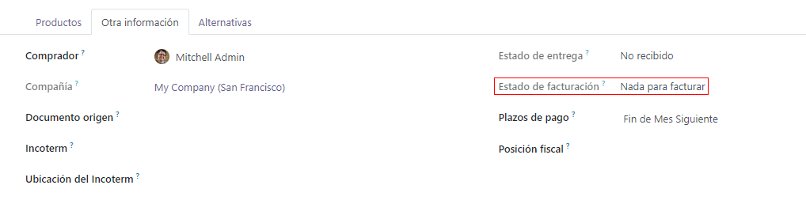

Bill control policies¶
In Odoo, the bill control policy determines the quantities billed by vendors on every purchase order, for ordered or received quantities. The policy selected in the settings will act as the default value and will be applied to any new product created.
Configuration¶
To view the default bill control policy and make changes, go to , and scroll down to the Invoicing section. Here, there are the two Bill Control policy options: Ordered quantities and Received quantities.
The policy selected will be the default for any new product created. The definition of each policy is as follows:
Ordered quantities: creates a vendor bill as soon as a purchase order is confirmed. The products and quantities in the purchase order are used to generate a draft bill.
Received quantities: a bill is created only after part of the total order has been received. The products and quantities received are used to generate a draft bill. An error message will appear if creation of a vendor bill is attempted without receiving anything.
Note
If one or two products need a different control policy, the default bill control setting can be overridden by going to the Purchase tab in a product’s template and modifying its Control Policy field.
Example flow: Ordered quantities¶
To complete an example workflow using the ordered quantities bill control policy, first go to , scroll down to the Invoicing section, and select Ordered quantities. Then, Save changes.
In the Purchase app, create a new RFQ. Fill out the information on the quotation form, add products to the invoice lines, and click Confirm Order. Then, click Create Bill. Since the policy is set to ordered quantities, the draft bill can be confirmed as soon as it is created, without any products actually being received.
Example flow: Received quantities¶
To complete an example workflow using the received quantities bill control policy, first go to , scroll down to the Invoicing section, and select Received quantities. Then, Save changes.
In the Purchase app, create a new RFQ. Fill out the information on the quotation form, add products to the invoice lines, and click Confirm Order. Then, click on the Receipt smart button. Set the quantities in the Done column to match the quantities in the Demand column, and Validate the changes. Then, in the purchase order, click Create Bill and Confirm. Since the policy is set to received quantities, the draft bill can be confirmed only when at least some of the quantities are received.
3-way matching¶
Activating 3-way matching ensures that vendor bills are only paid once some or all of the products included in the purchase order have actually been received. To activate it, go to , and scroll down to the Invoicing section. Then, click 3-way matching: purchases, receptions, and bills.
Note
3-way matching is only intended to work when the bill control policy is set to received quantities.
Pay vendor bills with 3-way matching¶
When 3-way matching is activated, vendor bills will display the Should Be Paid field under the Other Info tab. When a new vendor bill is created, the field will be set to Yes, since a bill can’t be created until at least some of the products included in a purchase order have been received.

Note
If the total quantity of products from a purchase order has not been received, Odoo only includes the products that have been received in the draft vendor bill.
Draft bills can be edited to increase the billed quantity, change the price of the products in the bill, and add additional products to the bill. If this is done, the Should Be Paid field status will be set to Exception. This means that Odoo notices the discrepancy, but doesn’t block the changes or display an error message, since there might be a valid reason for making changes to the draft bill.
Once payment has been registered for a vendor bill and displays the green Paid banner, the Should Be Paid field status will be set to No.
Tip
The Should Be Paid status on bills is set automatically by Odoo. However, the status can be changed manually by clicking the field’s drop-down menu inside the Other Info tab.
View a purchase order’s billing status¶
When a purchase order is confirmed, its Billing Status can be viewed under the Other Information tab on the purchase order form.
Below is a list of the different statuses that a Billing Status could appear as and when they are displayed, depending on the bill control policy used.
Billing Status |
Conditions |
|
On received quantities |
On ordered quantities |
|
Nothing to Bill |
PO confirmed; no products received |
Not applicable |
Waiting Bills |
All/some products received; bill not created |
PO confirmed |
Fully Billed |
All/some products received; draft bill created |
Draft bill created |